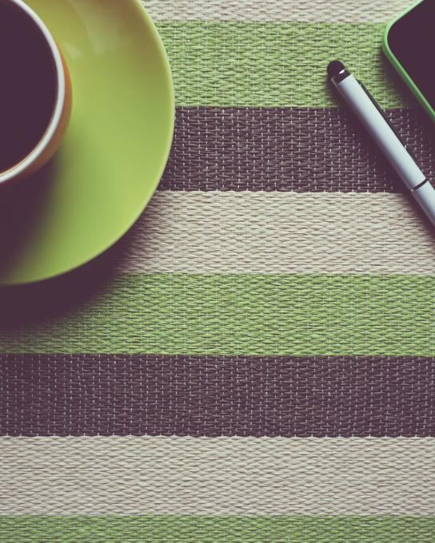
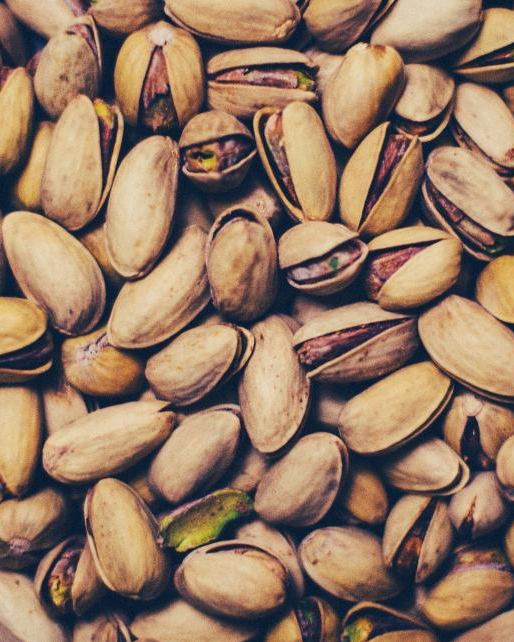
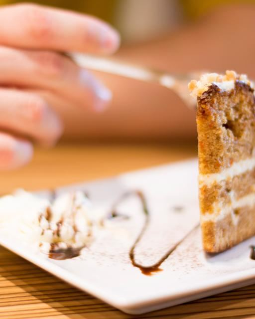
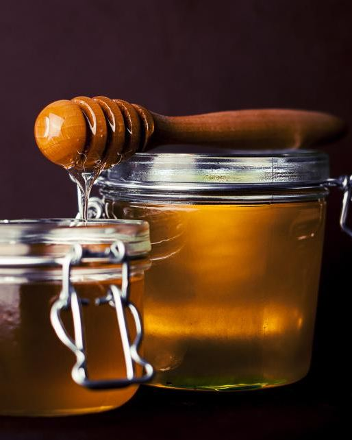
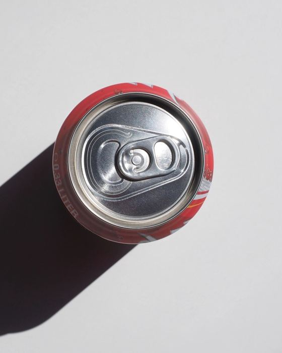
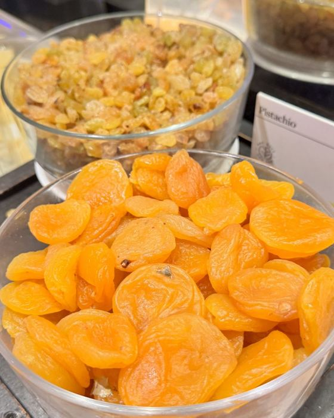
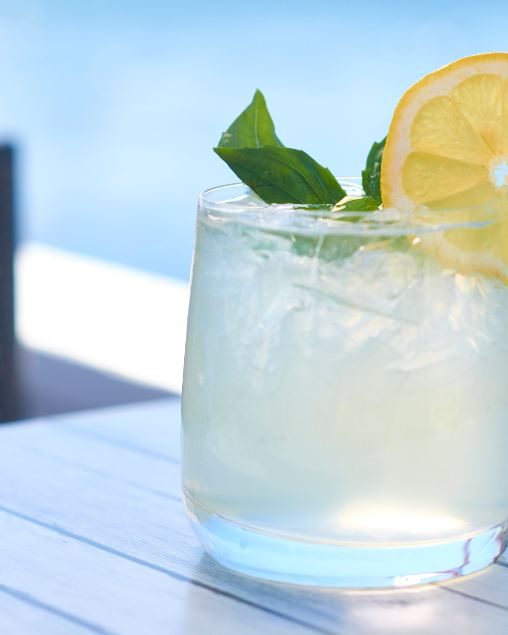
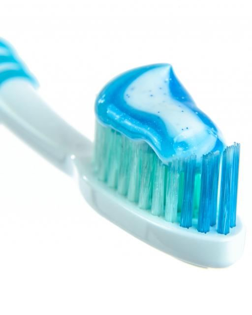
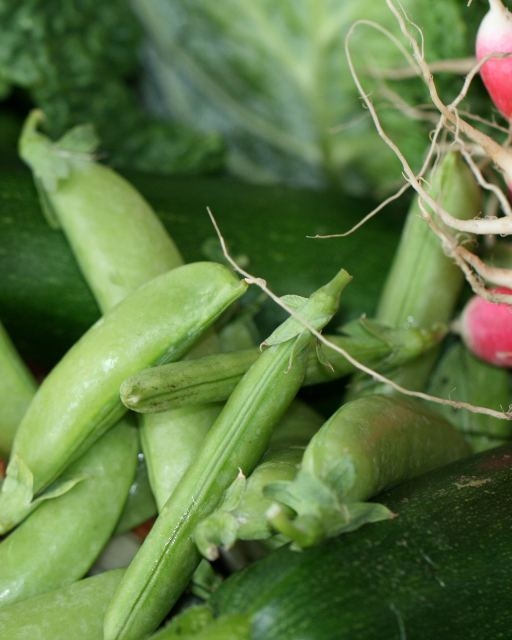
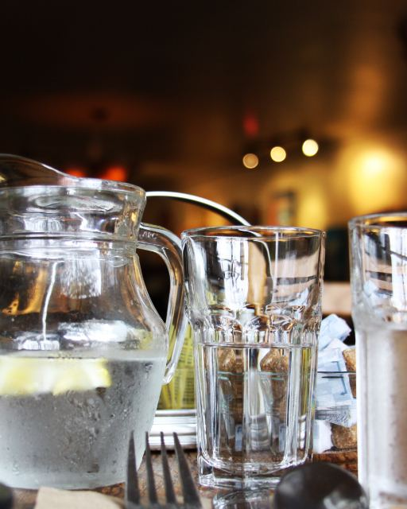

Вы чистите зубы, ходите к стоматологу, а пломб всё больше
Стоматолог лечит последствия, а кариес начинается в обычном дне. Узнаёте себя хотя бы в одной фразе? Это и есть то, что разбирает тест.
«Перекусываю весь день: то яблоко, то орешки»
Питание«Одной чашки кофе мне хватает на всё утро»
Напитки«Мёд и финики — это же полезно»
Питание«По утрам сухо во рту»
Слюна«Чищу зубы сразу после еды»
Гигиена«Налёт появляется почти сразу после чистки»
Состояние зубовКариес начинается не с пломбы, а с мелочей обычного дня
Каждая из этих привычек есть в тесте. По отдельности они безобидны, вместе — складываются в зону внимания.










Если причину не найти, всё пойдёт по кругу
Сегодня — пломба
Зуб вылечен, но привычки, из-за которых появился кариес, остались прежними.
Через год — ещё одна
Рядом появляется новая полость, а старая пломба требует замены.
Дальше — каналы и коронки
Каждый новый круг лечения дольше, дороже и неприятнее предыдущего.
Пломба лечит последствие. Остановить круг можно, только если понять, что именно в вашем дне работает против зубов.
Хорошая новость: причину можно найти, и это не только щётка
Кариес зависит от того, что и как часто вы едите и пьёте, сколько у вас слюны, как вы чистите зубы и как живёте. Тест разбирает шесть зон и показывает, какая из них у вас главная.
Питание
Перекусы, сладкое, «полезные сладости», кислые блюда, овощи
Напитки
Вода, кофе и чай, сахар в чашке, газировка, как долго вы пьёте
Слюна
Сухость во рту, дыхание ртом, запах по утрам
Гигиена
Как часто и долго чистите, межзубные промежутки, язык, щётка, паста
Образ жизни
Сон, стресс, никотин, витамины, лекарства, движение
Состояние зубов
Новый кариес, чувствительность, дёсны, налёт, осмотры
Ещё 5 открытых вопросов — о том, что беспокоит вас сейчас. Их прочитает Валерия, чтобы подготовить программу «Здоровая улыбка».
Как это работает
Откройте тест
Нажмите «Получить оценку» — вопросы откроются сразу, без записи и ожидания.
Ответьте на 50 вопросов
Готовые варианты ответа, можно вернуться назад. Прогресс сохраняется.
Получите карту зон
Проценты по шести зонам, цвет уровня и ваша основная зона внимания.
Начните с трёх шагов
Шаги под вашу зону, меню на 3 дня, видео и отчёт в PDF.
Что будет у вас после теста
Ваша карта зон вниманияСразу видно, где всё хорошо, а где привычки работают против зубов
Три первых шага
- 1Стакан чистой воды после каждого кофе
- 2Пить чай за 15 минут, а не растягивать на час
- 3Сладкое — только после еды, не перекусом
Видео от ВалерииКак читать результат и что делать дальше
Отчёт в PDFКарта, шаги и меню — сохраните и возвращайтесь к ним
Календарь гигиены на 4 недели
Отмечайте привычки каждый день на сайте или распечатайте и отмечайте ручкой
Место в программе «Здоровая улыбка»
Всем, кто прошёл оценку, мы бронируем место в ближайшем потоке групповой программы Валерии.
Оценка рисков кариеса
Тест откроется сразу, результат — после последнего ответа
- 50 вопросов по шести зонам: питание, напитки, слюна, гигиена, образ жизни, состояние зубов
- Карта зон внимания: диаграмма, проценты и уровень по каждой зоне
- Три первых шага под вашу основную зону
- Меню на 3 дня и короткое видео от Валерии
- Отчёт в PDF, чтобы вернуться к нему в любой момент
- Бонус: календарь гигиены на 4 недели, чтобы отмечать новые привычки
За каждым, кто прошёл оценку, закрепляется место в ближайшем потоке программы «Здоровая улыбка». Количество мест в потоке ограничено.
Что обычно спрашивают
Это диагноз?
Нет. Результат — не диагноз и не медицинская оценка вероятности кариеса, а понятный профиль ваших привычек: где факторы внимания выражены сильнее, а где всё в порядке. Осмотр стоматолога тест не заменяет.
Сколько времени займёт тест?
50 вопросов с готовыми вариантами ответа, отвечайте в своём темпе. Прогресс сохраняется в браузере: можно прерваться и вернуться позже.
Что я получу после ответов?
Карту зон внимания с диаграммой, три первых шага под вашу основную зону, меню на 3 дня, видео от Валерии, календарь гигиены на 4 недели и отчёт в PDF.
Нужно ли сдавать анализы?
Нет. Для оценки нужны только ваши ответы на вопросы.
Как сохранить результат?
На странице результата есть кнопка «Сохранить отчёт в PDF». Результат также остаётся в браузере, где вы проходили тест.
Что такое «Здоровая улыбка»?
Групповая практическая программа Валерии Кухарь. В ней глубже разбираем, как питание, слюна и ежедневные привычки сохраняют зубы здоровыми, и закрепляем новые привычки вместе с группой.